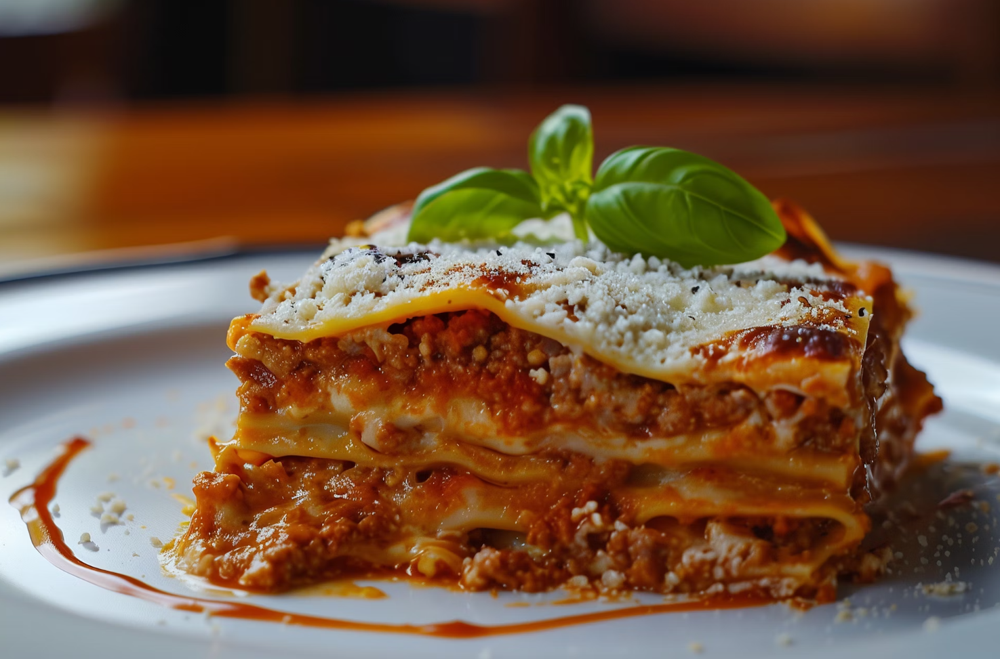

Lasagna

Description
This classic homemade lasagna is layered with rich meat sauce, creamy béchamel, and tender pasta sheets. Perfect for cozy family dinners or special occasions, this dish brings together the hearty flavors of Italy in every bite.
Whether you're a seasoned cook or just starting out, this recipe is easy to follow and guarantees delicious results. Serve it with a crisp salad and warm bread for a complete meal.
Ingredients
For the meat sauce:
- 500g ground beef (or half pork, half beef)
- 1 medium onion, finely chopped
- 2 garlic cloves, minced
- 800g canned crushed tomatoes
- 2 tbsp tomato paste
- 2 tbsp olive oil
- 1 tsp salt
- ½ tsp ground black pepper
- 1 tsp dried oregano
- A handful of fresh basil (or ½ tsp dried basil)
For the béchamel sauce:
- 50g butter
- 50g all-purpose flour
- 500ml milk
- A pinch of ground nutmeg
- Salt and pepper to taste
For assembling:
- ~10 lasagna noodles (pre-cooked or no-boil)
- 250g ricotta or cottage cheese
- 300g shredded mozzarella cheese
- 50g grated Parmesan cheese
Steps:
- Make the meat sauce:
Heat olive oil in a pan. Sauté chopped onion and garlic until soft.
Add ground beef and cook until browned.
Stir in crushed tomatoes, tomato paste, salt, pepper, oregano, and basil.
Let simmer on low heat for 20 minutes.
- Prepare the béchamel sauce:
In a saucepan, melt the butter over medium heat.
Stir in the flour and cook for 1 minute.
Gradually whisk in milk, stirring continuously until smooth and thickened.
Season with salt, pepper, and a pinch of nutmeg.
- Preheat the oven to 180°C (356°F).
- Assemble the lasagna:
In a baking dish, spread a layer of meat sauce, then noodles, ricotta, béchamel, and mozzarella.
Repeat the layers, finishing with béchamel and topping with Parmesan.
- Bake for ~45 minutes until golden and bubbly.
- Let rest for ~15 minutes before slicing and serving.